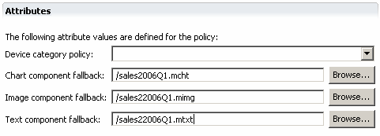
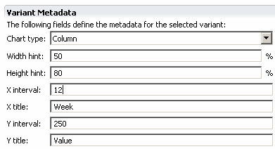

Using the Chart component editor you can define dynamic (chart), static (image) and text fallback components.

The chart variant metadata include values for the chart type, the data intervals and titles for the axes, and width and height hints for the percentage of the display to be used. Only the default selection criterion is available.

Related topics
Specifying charts
Variant attributes
Component attributes